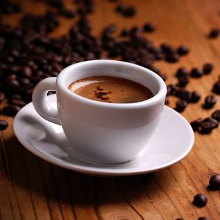
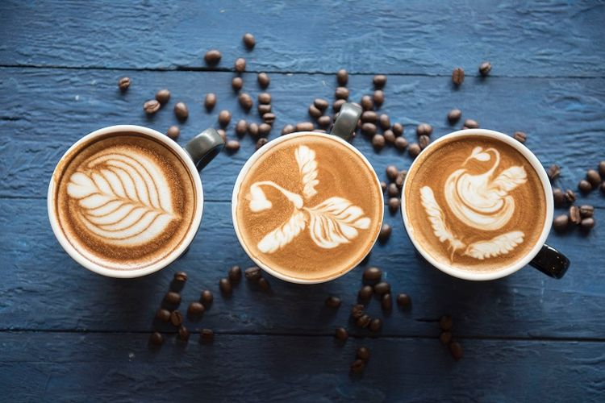
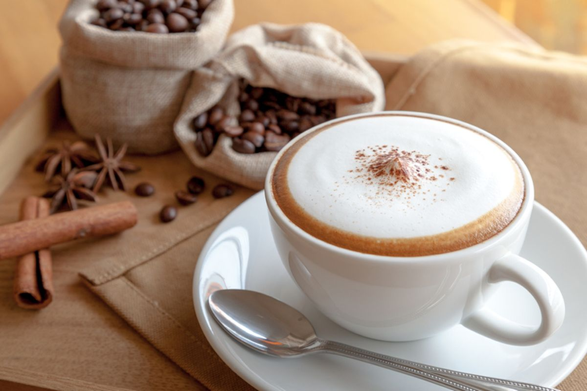
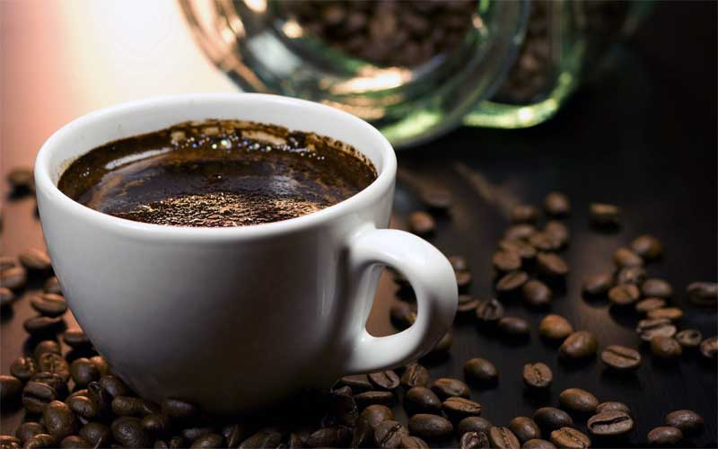

Kopi hitam merupakan salah satu sajian kopi yang sederhana, melibatkan proses ekstraksi antara bubuk kopi dan air panas untuk penyeduhannya. Secara konsep, metode seduh kopi hitam memiliki variasi, kopi long black, kopi americano bahkan sajian kopi tradisional seperti kopi tubruk termasuk sajian kopi hitam.
Kopi Espreso

Kopi Espreso
Espreso adalah jenis kopi yang dihasilkan dengan mengekstraksi biji kopi yang sudah digiling dengan menyemburkan air panas di bawah tekanan tinggi. Espresso berasal dari Bahasa Italia yang berarti express atau "cepat" karena dibuat untuk disajikan dengan segera kepada pelanggan.
Latte

Latte
Latte atau Caffè latte (Bahasa Italia yang artinya kopi susu) adalah espresso atau kopi yang dicampur dengan susu dan memiliki lapisan busa yang tipis di bagian atasnya. Perbandingan antara susu dengan kopi pada caffè latte adalah 2:1. Di AS kombinasi latte terdiri dari sepertiga espresso dan dua pertiga susu panas, sehingga lebih terasa susunya dibanding cappuccino.
Kapucino

Kapucino
Kapucino (dari bahasa Italia cappuccino) adalah minuman kopi khas Italia yang dibuat dari espreso dan susu, tetapi referensi lain juga ada yang menyebutkan bahwa kapucino berawal dari biji biji kopi tentara Turki yang tertinggal setelah peperangan yang dipimpin oleh Kara Mustapha Pasha di Wina, Austria melawan tentara gabungan Polandia-Jerman. Kapucino biasanya didefinisikan sebagai 1/3 espreso, 1/3 susu yang dipanaskan dan 1/3 susu yang dikocok hingga berbusa.
Kopi Tubruk

Kopi Tubruk
Kopi tubruk adalah minuman kopi khas Indonesia yang dibuat dengan menuangkan air panas ke dalam gelas atau teko yang sudah diisi bubuk kopi. Bisa dengan ditambahkan gula, bisa juga tanpa gula. Di Bali, Kopi Tubruk dikenal dengan nama “Kopi Selem” yang artinya kopi hitam.